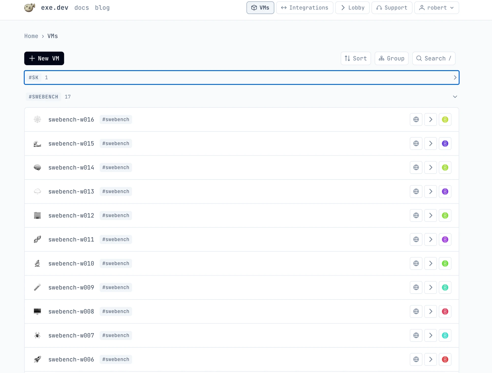

TokenFactory · SWE-bench
How we ran the benchmark
We evaluate the model, agent and gateway together. Here is what ran, how we count outcomes, and where interpretation needs care.
Three words we use
- Task
- One problem in the benchmark, a real bug report from an open-source project. The benchmark has 2,294 tasks.
- Attempt
- One model’s try at one task. 12 models x 2,294 tasks = 27,528 attempts.
- Solved
- The project’s own tests pass after the model’s patch.
Protocol
mini-SWE-agent version 2.4.6, pinned commit 04d809ceab9df28f9adaed044884180159172930. Official SWE-bench harness 4.1.0 at 726c5461e2ef52d83cf1ea2107870a8bb3328d57. We use 1 scored attempt per model per task, after explicitly disclosed incident restarts.
| Setting | Value |
|---|---|
| Agent steps | 250 |
| Wall check (seconds) | 3,600 |
| Outer process limit (seconds) | 4,500 |
| Request timeout (seconds) | 600 |
| Maximum output tokens per call | 32,768 |
| Completion tokens per attempt | 262,144 |
| Context proxy token cap | 131,072 |
| Harness timeout (seconds) | 1,800 |
| Temperature | 0 |
| Container CPUs | 2 |
Context proxy: cl100k_base over JSON serialized messages. Scaffold: mini-SWE-agent default swebench prompt at pinned commit. Container network: none; memory: 8g. The wall limit is checked between calls, so a slow call can extend elapsed time up to the outer process limit.
History isolation: base-only shallow repository; fresh Git object store; no remotes. A fresh object store exposes only the dataset base commit; ancestor and future commits and remotes are unavailable. Each prediction needs matching isolation evidence.
Infrastructure: how exe.dev let us scale
exe.dev made it easy to work with named Linux machines, plain SSH, Docker and systemd. Its credential integration kept our gateway key off every worker, and in-place resizing gave us more room on the same machines. Together, those choices let us run a matrix of 27,528 attempts across 16 machines with tools we already knew. Scheduling, recovery and grading logic is ours. We are grateful to exe.dev for giving that work a home we could understand, inspect and adapt as the run grew.
A fleet from the command line
We provisioned 16 worker VMs through the command line. Their recorded creation times span about 3.5 minutes (211 seconds). Each named VM was reachable by hostname over ordinary SSH, so we could use the same commands to deploy a worker, check its service and collect its files. Our shard assignment gave each task a fixed worker, keeping that task on the same machine across model routes. All 16 workers carry the shared project tag swebench in the exe.dev VM list.


Linux tools at the worker boundary
The task images target x86_64. Docker ran the task environments, and our deployment scripts used systemd through passwordless sudo to start workers under the VM user. A worker could keep running as a systemd unit after we closed its SSH session. Our bootstrap script checked out the pinned agent and harness and installed their dependencies. That gave us a repeatable setup to deploy across the fleet and ordinary service commands to use when we needed to inspect or restart a worker.
More room without replacing machines
We started with 8 vCPU / 32 GB VMs and resized them in place to 16 vCPU / 72 GB. Our upgrade script waited for running attempts and services to drain, resized and restarted each VM, checked its resources, and resumed held work from its existing queue. Every fleet member completed that upgrade. Each VM drained independently, so upgrades could overlap. We kept the machines and their queues while giving the workers more room to run.
Credentials stayed outside task environments
An exe.dev integration attached to each worker injected the provider credential at the platform edge. Our workers called the integration endpoint with a placeholder SDK key. The real gateway key stayed off worker VMs and out of task containers. We could deploy our runner without putting that credential in its archive, and agent-generated code never had to protect it. This mattered when it came time to collect trajectories and logs for publication.
We searched every collected trajectory, log, prediction and grading file for the real gateway key and found no match. The evidence packer also refuses to write any file containing that value.
The matrix and its observed window
The configuration spans 16 workers and 128 concurrent attempt slots for 12 models and 2,294 tasks: 27,528 configured attempts. Slots describe capacity; grading coverage tells you how much has completed. Each attempt uses a fresh container with networking disabled. A worker pulls each task image into its local cache and reuses it across model routes, though a restart can trigger another pull. Keeping a task on its assigned worker let successive models use that local image cache.
Telemetry naming the clean experiment covers about 63 hours of observation. We include a record when any worker identifies that experiment, leaving out earlier records that lack its identifier. Scores remain provisional wherever grading is incomplete.
Our scripts, our recovery decisions
We operated the fleet through systemd units, SSH, rsync and Docker. Our scheduler, recovery tools and collection scripts remained ordinary files you can inspect. We could follow a worker from its queue to its service and then to the files it produced. Moving the benchmark to another host would mean adapting provisioning, resizing and credential attachment while retaining our benchmark logic.
We made engineering mistakes, including a scheduler bug and grading timeouts under load. The machines let us repair and redeploy our scripts while retaining evidence. We own those mistakes. The incident notes, reviewed timeouts and invalidated history explain what changed and remain part of the result.
If you are setting up a similar run, what worked for us was to start with one VM per shard, resize in place when we outgrew it, and keep the credential at the platform edge. Thank you to exe.dev for making that a practical way to work.
Where these facts come from
Paths refer to the collected source tree unless marked as publication tooling. Source hashes are in build provenance; derived values are in infrastructure data. Durations are windows read from recorded timestamps. Source scripts are read, never executed by this build.
- Fleet creation: 211 seconds, from 2026-10-29T17:28:56+00:00 to 2026-10-29T17:32:27+00:00.
- Clean-experiment observations: 63.0817359775 hours, from 2026-10-29T20:02:57.306191+00:00 to 2026-11-01T11:07:51.555710+00:00.
- Fleet creation times and SSH destinations:
artifacts/fleet.json,scripts/fleet.py. - Worker setup, systemd and dependency bootstrap:
scripts/fleet.py,scripts/bootstrap.sh,README.md. - Resource settings, per-VM drain checks and retained queues:
scripts/fleet.py,scripts/upgrade_fleet.py,artifacts/upgrade-v2.json. - Credential integration and placeholder key:
README.md,scripts/run_job.py. - Matrix, concurrency, isolation, image reuse and architecture:
configs/experiment.json,configs/protocol.json,scripts/upgrade_fleet.py,scripts/worker_v2.py. - Clean-experiment observation window:
artifacts/telemetry-history.jsonl. - Collection and recovery mechanisms:
scripts/fleet.py,scripts/upgrade_fleet.py,README.md. - output of `ssh exe.dev ls` on 2026-10-31, listing all 16 worker VMs with the #swebench tag (recorded in publication tooling:
tools/partners.json). - search of artifacts/fleet-backups, artifacts/control-backup, artifacts/report, configs, scripts, tests and the top-level docs for the literal gateway key value on 2026-11-01 returned no matches (recorded in publication tooling:
tools/partners.json). - Publication tooling: evidence packer. Its exact-value check uses the supplied credential value.
A shared gateway and an inspectable result
TokenFactory gave us one OpenAI-compatible endpoint and one API shape for 12 models, with tool calling across every route. We could use the same request machinery throughout the run. When we found serving issues, we reported them with evidence so the gateway team could act. Thank you for giving us a shared way to reach these models. You can get access through the TokenFactory portal linked in the footer.
We at Spec Kitty ran the benchmark and graded predictions with the official SWE-bench harness. We publish results and trajectories alongside the protocol and incident notes so you can trace a score back to an attempt. The evidence page shows what has been packaged, and grading coverage stays visible with the scores.
Outcome definitions
- Resolved
- Completed grading with a resolved result, prediction identity and required harness evidence validated by the source report.
- Unresolved
- Completed grading without resolution, including validated empty patches, patch-apply failures and explicitly reviewed patch-induced test timeouts.
- Ungraded
- A prediction without a completed accepted grade, or a grade whose required evidence or current amendment is missing. A test timeout remains ungraded until reviewed.
- Missing
- No prediction and no grade in the collected report. This can include pending, paused or uncollected work; it is not a failure result.
The site consumes scripts/report.py exports and checks summary and repository counts against every CSV row. scripts/subsets.py supplies the Verified counts: astropy__astropy-7606 has a different PASS_TO_PASS contract and needs supplemental grading. We never borrow its Full result. Lite uses matching Full contracts. Wilson intervals use 95% confidence and the graded denominator; the benchmark is a fixed task set, so these are descriptive sampling intervals, not uncertainty over model randomness.
Grading amendments
The following task-wide amendments set OMP_NUM_THREADS=1 for all nonempty submissions, including previously completed grades. Official tests and the harness time limit stay unchanged. Original evidence remains archived; diagnostic tests are unscored and inference is not repeated.
| Task | Amendment | Reason |
|---|---|---|
| scikit-learn__scikit-learn-14869 | sklearn-14869-omp1-v1 | Default threading timed out on the unmodified base; one-thread controls passed in about 1.5 seconds both with and without CPU quotas. Full GLM-5.3 patched suite passed 81 tests in 2.23 seconds. |
| scikit-learn__scikit-learn-14024 | sklearn-14024-omp1-v1 | Default-thread unmodified base full-suite control exceeded 120 seconds without resource quotas. OMP_NUM_THREADS=1 completed with 65 passed and 2 expected regression failures in 2.94 seconds; GLM-5.3 uncensored patched suite passed all 67 tests in 2.34 seconds. |
| scikit-learn__scikit-learn-14710 | sklearn-14710-omp1-v1 | Default-thread unmodified base control exceeded 120 seconds without resource quotas. One-thread base completed with 79 passed and one expected regression failure in 2.51 seconds; GLM-5.3 patched suite passed all 80 tests in 2.58 seconds. |
| scikit-learn__scikit-learn-25308 | sklearn-25308-omp1-v1 | Unlike earlier amendments, the default-thread unmodified base completed alone (157.6 s: 14 failed, 9449 passed). Under production concurrency, default-thread grading reached the 1800-second limit for multiple models (worker load average above 100), and a regrade under unchanged settings timed out again. One-thread base gave identical results (14 failed, 9449 passed in 126.9 s) and the GLM-5.3 patched suite passed 9463 tests in 121.7 s. Verdicts are unchanged by thread count; only contention-induced timeouts are removed. |
| scikit-learn__scikit-learn-25774 | sklearn-25774-omp1-v1 | Default-thread unmodified base completed alone in 14.1 s (1 failed, 258 passed), so the timeouts seen across seven models were contention-induced under concurrent worker load (load average above 50). One-thread base gave identical results (1 failed, 258 passed in 13.2 s); the GLM-5.3 patched run matched (1 failed, 258 passed, 13.3 s). Verdicts are unchanged by thread count. |
| scikit-learn__scikit-learn-25370 | sklearn-25370-omp1-v1 | Default-thread unmodified base completed alone in 27.5 s of test time (1 failed, 63 passed, 1 xfailed) but graded runs reached the 1800-second limit under concurrent load for nine models, and a regrade of three of them timed out again at load average 57. One-thread base gave identical results in 6.6 s; the GLM-5.3 patched suite passed 64 tests (1 xfailed) in 6.1 s. Verdicts are unchanged by thread count. |
| scikit-learn__scikit-learn-13933 | sklearn-13933-omp1-v1 | Same basis as sklearn 25308, 25774 and 25370: the default-thread unmodified base completed alone in 22.5 s of test time (1 failed, 64 passed), but four graded runs reached the 1800-second limit under concurrent worker load. One-thread base gave identical results (1 failed, 64 passed in 2.3 s) and the GLM-5.3 patched suite passed all 65 tests in 2.3 s. Verdicts are unchanged by thread count. |
The outcome chart counts each attempt once, testing groups in this order: resolved; ungraded or missing; reviewed timeout (an outer-process adjudication or a reviewed patch-induced test timeout); empty patch; remaining unresolved patch. A timeout-created empty prediction belongs only to the timeout group. An unreviewed timeout stays in the waiting group.
Reviewed timeouts
The exported report contains 119 outer-process timeout adjudications and 1 test-timeout reviews. Reviewed outer timeouts with no submission produce an empty prediction under the existing budget; no inference is repeated. A confirmed patch-induced test hang counts as unresolved under the original harness limit. Unreviewed timeouts remain ungraded. Original grades, logs, control diagnostics and hashes remain part of the evidence.
nemotron-3-super · matplotlib__matplotlib-13980
Original suite exhausted 1800 seconds. Isolated patched diagnostic hung at test_polar_negative_rmin[png] and exhausted 300 seconds with a live Ghostscript child; unpatched control completed that test in 1.25 seconds. Six other submitted patches completed the same suite in about 48 seconds. Shared FreeType warning does not explain this patch-specific hang. Diagnostic results are not substituted for official test results.
Gateway incidents and recovery
muse-spark-open excluded. User requested exclusion after provider backend DNS failure (2026-10-29). The experiment context reports that this route is now absent from the gateway; this offline build does not query live availability.
GLM uncensored backend outage. The experiment context reports a backend outage on glm-5.3-uncensored-fp8 and fresh reruns. The named report/config inputs do not supply an attributable rerun count. We exclude superseded attempts and leave that count unavailable rather than infer it from failure exits.
glm-5.3-flash serving fault and restart. Gateway route returned corrupted or non-terminating output for repeated identical prefixes; 0/72 failures with a per-request nonce versus about one third without. See STATUS.md. all attempts after the 2026-10-31 restart; earlier attempts are archived as superseded A unique leading token is added to every request. This changes the prompt prefix and is a disclosed exception to identical scaffolding. Earlier attempts are archived and excluded from these scores.
Request timeout amendment (2026-10-29). 120 to 600 seconds. GLM Flash diagnostic required 418 seconds to return 32768 reasoning tokens; 120 second nonstreaming timeout incorrectly prevented response receipt Scope: all newly started model jobs. explicit inspection required; diagnostic response excluded from benchmark.
- History
- exact saved messages retained, terminal transport exception removed
- Tokens
- all received completion usage retained, including format-error responses
- Calls
- all completed model queries retained; failed transport query retried
- State
- Only reviewed command hashes replayed. Read-only replays must preserve initial tracked diff; source-edit replays require independently validated exact changed-file set and final content hashes.
- Wall time
- retain original elapsed time minus 120 seconds per logged timeout retry plus final terminal timeout; this is a conservative lower bound on failed transport time
- Audit
- resume.json and archived original trajectory/config/logs per job
Kimi timeout exits are reported on the model pages. Outer timeout adjudications establish exhausted budgets without submission; they do not alone establish gateway-stall causation. We do not equate all wall-budget exits with transport failure.
Invalidated history
tokenfactory-swebench-full-v1 (invalidated: future Git history exposed). The earlier image checkout exposed later Git commits, including a task solution observed in a trajectory. Its scores are excluded entirely. The clean run starts afresh with base-only shallow history. This site does not read the invalidated run or the superseded-attempt archives.
Limits and caveats
- One scored attempt does not measure run-to-run variance. Gateway aliases and modified routes are not interchangeable with base models.
- Resource contention, transport amendments, explicitly reviewed recovery and the nonce restart affect interpretation.
- Partial coverage may be nonrandom. A provisional rank can change when pending attempts are graded.
- API calls are the recorded step proxy. Missing usage, failed calls and unfinished trajectories can understate total token consumption.
- Evidence availability and benchmark coverage are separate. A final score badge does not certify that the public evidence archive is complete.
- We use saved official comparison metadata; no live leaderboard or gateway query is performed.